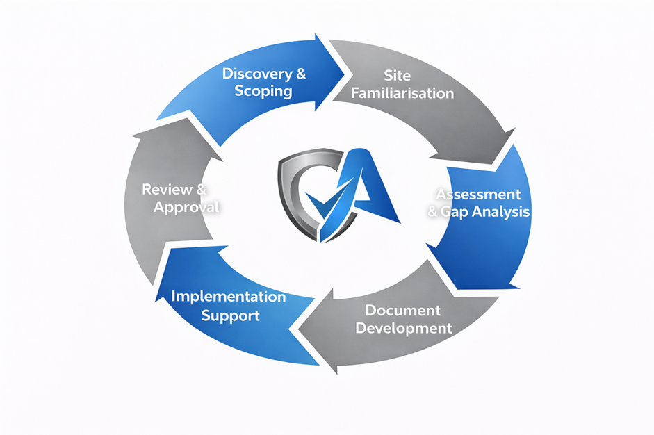

Specialist consultancy in Safe Systems of Work and Industrial Risk Control
Operational Assurance Group is an experienced, specialist consultancy dedicated to supporting UK industrial operations with practical, compliant, and audit-ready health, safety, and risk control solutions. We work across the construction, chemical, and petrochemical sectors, providing documentation and consultancy services that enable confident operational delivery while protecting people and businesses.
Operational Assurance Group was established to meet a clear need within the UK's industrial sectors: accessible, expert safety consultancy that understands the realities of on-site operations. With years of collective experience across construction sites, chemical manufacturing facilities, and petrochemical plants, our team brings practical, sector-specific knowledge to every engagement.
We have built our reputation on delivering workable safe systems of work that satisfy regulatory requirements without imposing unnecessary administrative burden. Our documentation is designed to be used on the ground, not filed away in a drawer. From small-scale site-specific projects to multi-year framework agreements with tier-one contractors, we tailor our approach to the operational context and risk profile of each client.
Our expertise spans health and safety legislation, CDM compliance, permit to work systems, COSHH assessments, environmental risk frameworks, and specialist high-risk activity planning. We remain current with evolving HSE guidance and industry best practice, ensuring our clients benefit from up-to-date, defensible documentation that stands up to audit and tender scrutiny.
"Our mission is to protect people, protect businesses, and enable confident operational delivery through rigorous, practical, and industry-specific safe systems of work and risk control frameworks."
Operational Assurance Group maintains a range of industry-recognised accreditations and professional memberships, ensuring our work meets the highest standards of quality, safety, and compliance.
Health and Safety Executive aligned practices. All our documentation and consultancy services follow current HSE guidance and UK health and safety legislation.
Institution of Occupational Safety and Health. Our team maintains professional IOSH membership, reflecting commitment to continuing professional development and sector best practice.
National Examination Board in Occupational Safety and Health. NEBOSH-qualified consultants bring advanced technical knowledge to every project.
Application of lean principles to safety and operational systems, ensuring efficiency without compromising rigour or compliance.
Site Management Safety Training Scheme. Our consultants understand the practical challenges of site-level safety management and supervision.
Documentation produced to recognised industry standards, structured for clarity, usability, and audit compliance.
The values that underpin everything we deliver
Protecting people is fundamental to every recommendation and system we develop.
Clear, practical documentation designed for live operational environments.
Meeting regulatory requirements without unnecessary bureaucracy.
Solutions shaped around how your business actually operates.
Structured, traceable, and aligned with HSE expectations.
Technical information presented in a way that is easily understood and applied.
Specialist experience across construction, chemical, and petrochemical sectors.
Structured, compliant outputs aligned with current HSE guidance.
Flexible delivery from one-off projects to long-term partnerships.
Keeping systems current, effective, and aligned with evolving legislation and best practice.
Our structured approach ensures that every project is delivered with clarity, consistency, and a strong focus on real-world application.

Understanding your requirements, scope, and key risks to define clear deliverables and priorities.
Engaging with your site and teams to understand operational realities and constraints.
Reviewing existing systems and identifying risks, gaps, and improvement opportunities.
Producing clear, practical, and compliant safe systems of work and supporting documentation.
Supporting rollout to ensure documentation is understood and applied effectively.
Refining outputs to align with operational requirements and regulatory expectations.
Providing continued support to maintain compliance and adapt to evolving operations.
Speak to us today to discuss how our structured approach can support your next project with expert safety consultancy.
Get in Touch